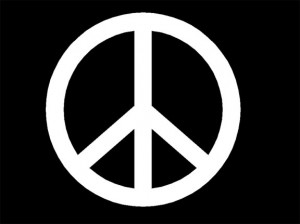
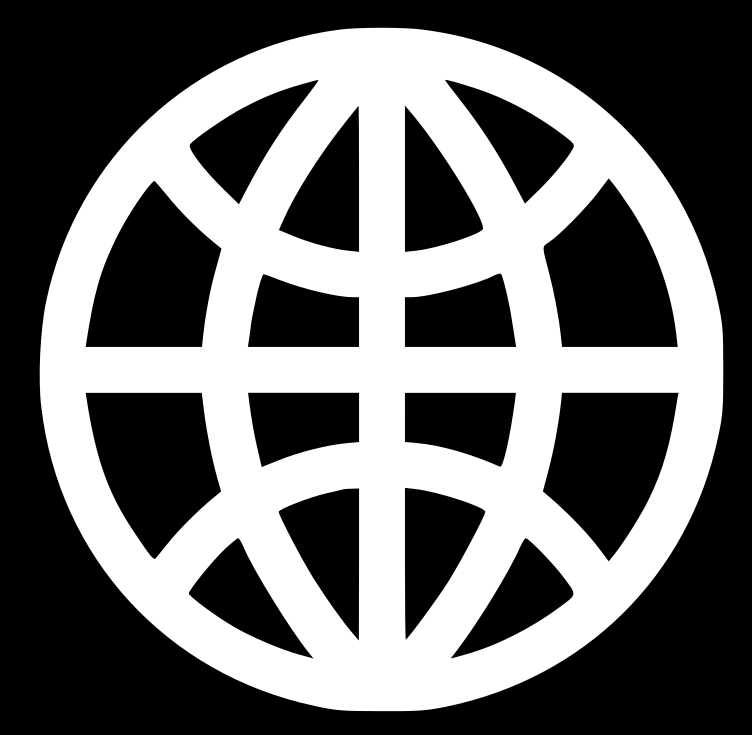
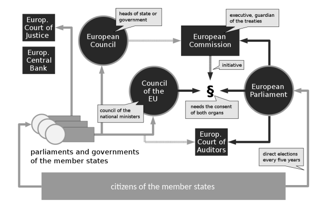

European Union
The European Union is a unified trade and monetary body of 27 member countries. It eliminates all border controls between most EU members. The open border allows the free flow of goods and people. There may be police checks based on police information and experience, but these are not equivalent to border checks.
Any product manufactured in one EU country can be sold to any other member without tariffs or duties.
Practitioners of most services, such as law, medicine, tourism, banking, and insurance, can operate a business in all member countries

Equality:
Equality is about equal rights for all citizens before the law.
Rule of law:
The EU is based on the rule of law. Everything the EU does is founded on treaties, voluntarily and democratically agreed by its EU countries. Law and justice are upheld by an independent judiciary.
Principles of EU
Democracy:
The functioning of the EU is founded on representative democracy. A European citizen automatically enjoys political rights.
Freedom:
Freedom of movement gives citizens the right to move and reside freely within the Union. Individual freedoms such as respect for private life,
freedom of thought, religion, assembly, expression and information are protected by the EU Charter of Fundamental Rights.
Human dignity:
Human dignity is inviolable. It must be respected, protected and constitutes the real basis of fundamental rights.
Human rights:
Human rights are protected by the EU Charter of Fundamental Rights. These cover the right to be free from discrimination on the basis of sex, racial or ethnic origin, religion or belief, disability, age or sexual orientation, the right to the protection of your personal data, and the right to get access to justice.


System of EU
The primary institutions of the European Union are the European Commission, the European Council, the Council of the European Union and the European Parliament.
The ordinary legislative procedure, applies to nearly all EU policy areas.
Under the procedure, the Commission presents a proposal to Parliament and the council.
They then send amendments to the Council which can either adopt the text with those amendments or send back a "common position".
That proposal may either be approved or further amendments may be tabled by the Parliament. If the Council does not approve those,
then a "Conciliation Committee" is formed. The committee is composed of the Council members plus an equal number of MEPs who seek to agree a common position.
Once a position is agreed, it has to be approved by Parliament again by an absolute majority.
There are other special procedures used in sensitive areas which reduce the power of Parliament.